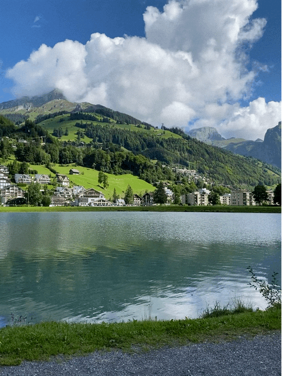

GIF Format Example

About This Image
This image shows a clear blue sky that reflects on a calm blue lake. The lake is sourrounded by a big green floral mountain with houses and condos.
Why GIF Format?
GIF is the fight format for this image beacuse it reflects clearly the color of the sky and mountain and its colring effect on the lake .From the the green mountain the lake has a hint of green. It's also best for this image beacuse is relfects cleary how calm and gentle the lake is is . This format is also most practical for web use given that it can handle visuals without needing a lot of details.
Image source: Wikimedia